Hi! I’m Anna, and I turn cutting‑edge research into toys, tools, and stories.
I’m a biologist turned creative producer and marketer, and the founder of Solarpunk Studio, a science communication practice. For 12 years I’ve led communications strategy and production for scientific and technical projects: video series, campaigns, exhibits, data stories, and participatory experiences built on fun, wonder, and a good sense of humor. From millions of views on YouTube to bar charts made of jelly beans, I make research feel human through toys, tools, and stories that connect us to each other, the future, and the planet we call home.
Below you’ll find whales, sea otters, 3D viruses, a neuron dancefloor, a force-directed visualization, magical meditations, team bonding, elevator pitches, watchdog journalism, and one very memorable fire.
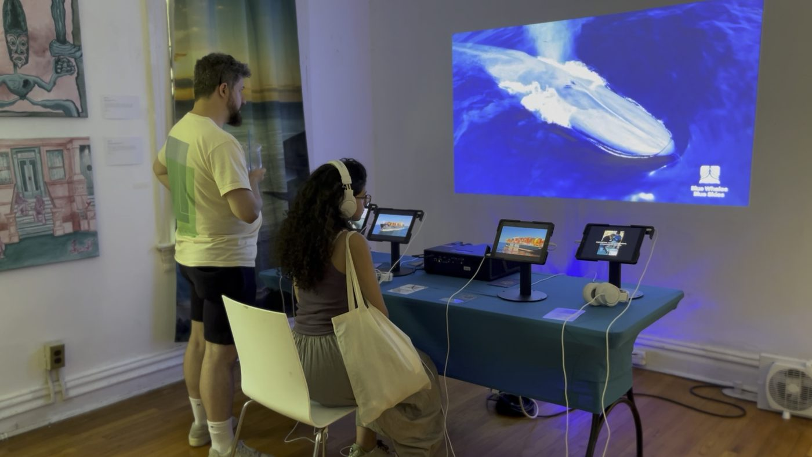
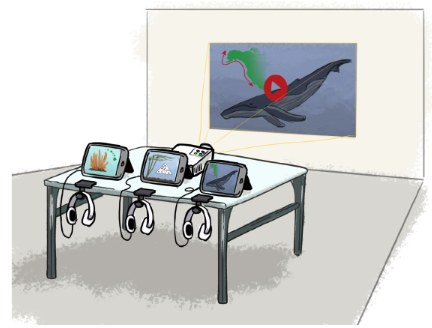
Turning the Tide
Immersive exhibit on ocean solutions
- Exhibit design
- Offline kiosk app
- Fabrication
Turning the Tide: Ocean Solutions in Action is a hopeful tour of ocean solutions that are already working, from clam and coral restoration to slower ships that protect blue whales. I created it for the Climate Imaginarium, the art and education space that opened ahead of a $700M climate research center planned for Governors Island in 2028. I pitched it to the Blue Whales Blue Skies initiative and brought them on as sponsor myself, worked with Sonos to get speakers into the room, and then built it. Three long-time communications clients came back as content partners: the Hawaiʻi Institute of Marine Biology, the California Marine Sanctuary Foundation, and Ocean Youth Academy. Friends of the Bay joined to give the exhibit a local tie-in in New York. Visitors moved through physical installations and iPad stations with soundscapes, interactive maps, and data stories on whale migration and coral reefs. Along the way, they grew a coral fragment month by month and practiced the citizen science sampling that students do aboard polar expeditions.
- Audience
- 3,000+ visitors over six weeks (free admission)
What the model doesIt works behind the scenes. Lovable (built on Claude) turned each partner’s data into the iPad apps visitors explore, so visitors never talk to a model directly.
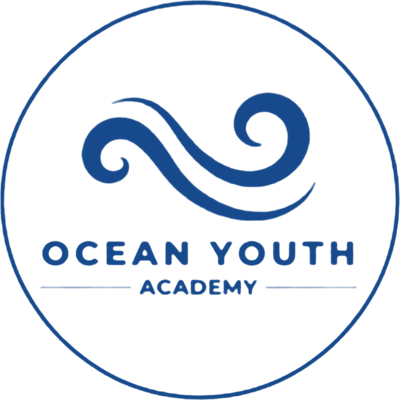
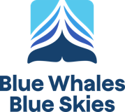
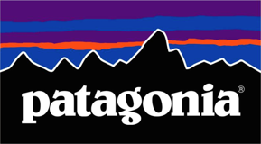
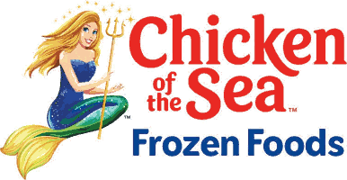
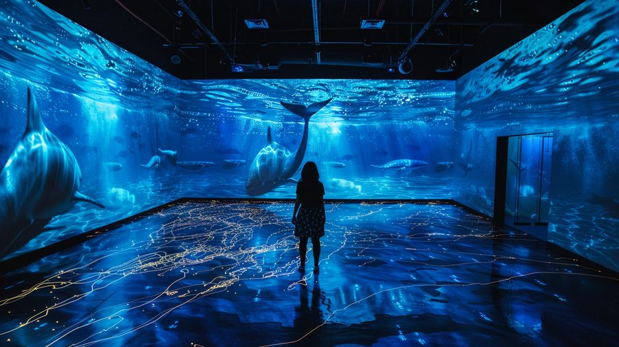
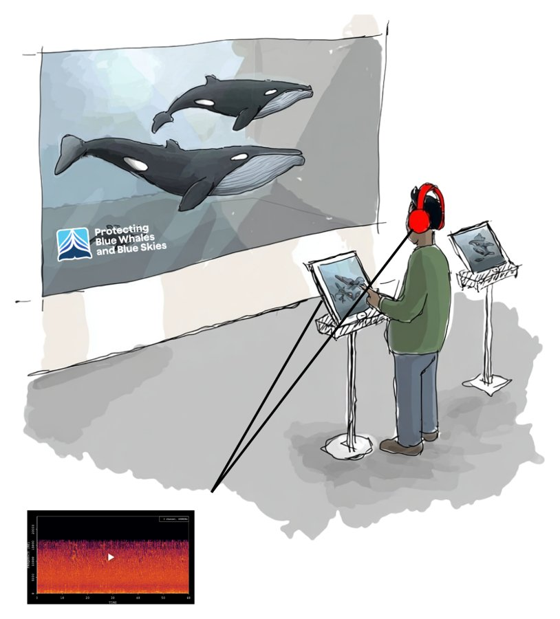
- Me
Pitched an original exhibit on ocean solutions to Blue Whales Blue Skies, which signed on as sponsor
- Partners
Four partner organizations shared their data and stories
- AI
Processed each partner’s data in Lovable (built on Claude)
- MeAI
Designed and built every iPad experience as an offline kiosk app; getting Lovable’s code to run fully offline was the hardest fix
- ScientistsPartners
Reviewed every video and interactive, and all four partners signed off
- MeAI
Laid out the exhibit, scoped the physical build, and bought the materials
- Operations managerSpatial computing engineer
Installed it with me
- Volunteer coordinator
Ran the space for six weeks
A room-scale version with projection mapping, where visitors see shipping lanes and whale migration routes side by side, and their own footsteps and voices move the whales. OpenAI’s realtime voice model (gpt-realtime) would listen as people talk and steer the visuals and soundscape in response. A bigger Sonos sponsorship and their equipment would bring it closer to the full-scale vision in the concept image.
Seeker: The Swim and How Close Are We?
Science video series · A 3-million-subscriber science channel
- Series production
- Science video
- Research partnerships
At Seeker I pitched and wrote episodes for six science series, Elements, Sick, Science in the Extremes, Tusks to Tails, The Swim, and How Close Are We?, and helped shape their format and look. The Swim was the biggest. Built with Discovery, it followed endurance athlete Ben Lecomte’s attempt to swim more than 5,000 miles across the Pacific, with his boat doubling as a floating lab for 27 research institutions that collected more than 1,000 samples. As project manager and producer of the mid-form series, I helped turn each research project into a 5 to 7 minute YouTube deep dive, from microplastics and Fukushima radiation to what his heart and bones could teach long-duration spaceflight. How Close Are We? asked how near we are to solving some of humanity’s biggest scientific challenges, like landing on Mars and curing cancer.
I also owned the packaging: thumbnails, titles, and metadata. I watched how each episode performed, swapped in new packaging when it lifted views, and steered storytelling strategy toward what drew people in. Several episodes passed 1 million views.
- Audience
- Seeker’s 3 million subscribers, plus Discovery’s audience through weekly updates and a feature documentary
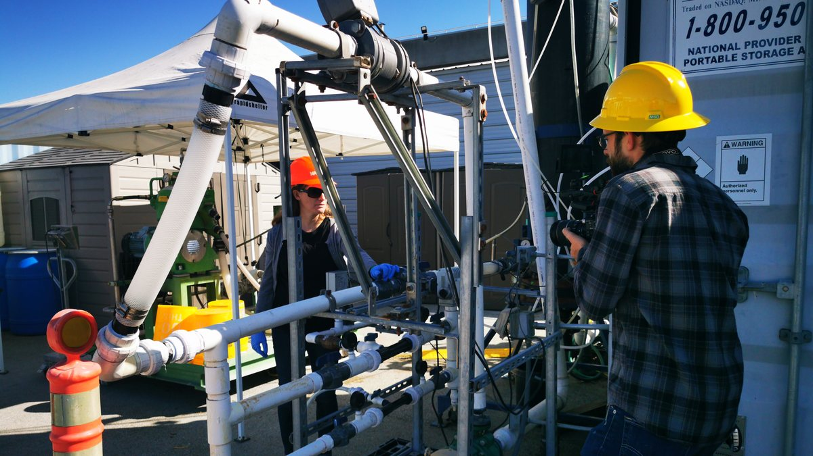
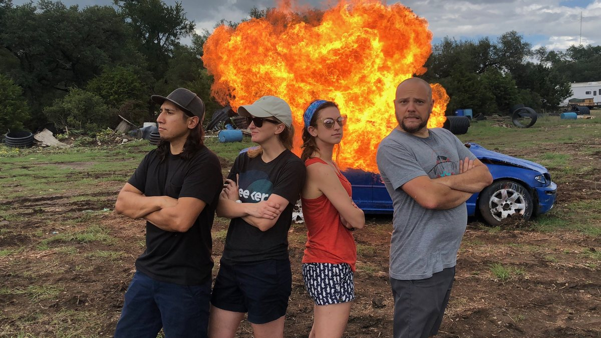
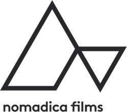
- +25 more institutions
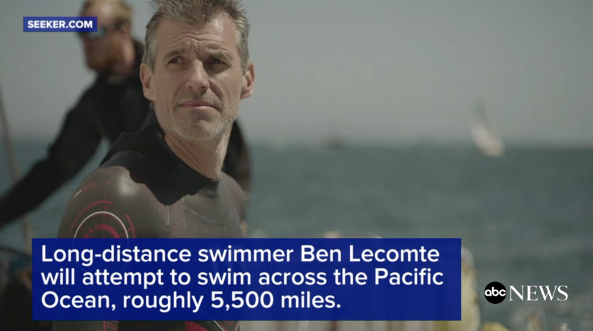
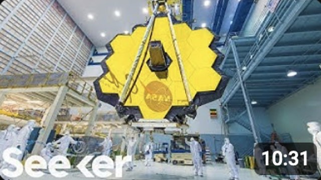
1M views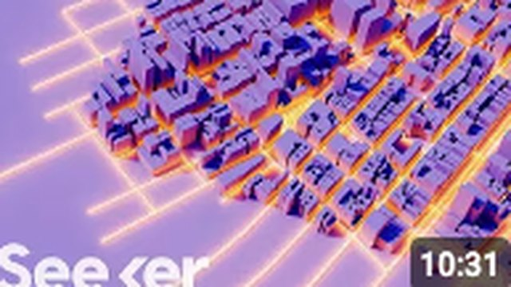
401K views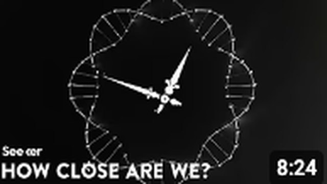
608K views- 407K views
- 398K views
- 497K views
- Team
The editorial team set up six science series
- MeTeam
Pitched and wrote episodes, and shaped each series’ format and look
- Me
Project-managed The Swim with Discovery, Nomadica Films, and 27 research institutions
- Scientists
Shared their findings from NASA, MIT, Harvard, NIH, and more
- Me
Turned the findings into scripts and storyboards for the mid-form deep dives
- Video crew
Editors and cinematographers shot in the studio and the field, and cut each episode
- MeTeam
Sharpened formats with audience data, and owned thumbnails, titles, metadata, and SEO
A live, interactive companion app for an expedition like The Swim, where people explore the boat in 3D, see samples like tagged trash as they come in, and listen to whale song recorded by the hydrophones.
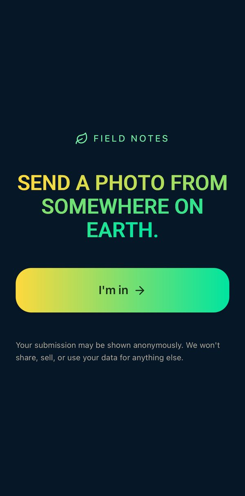
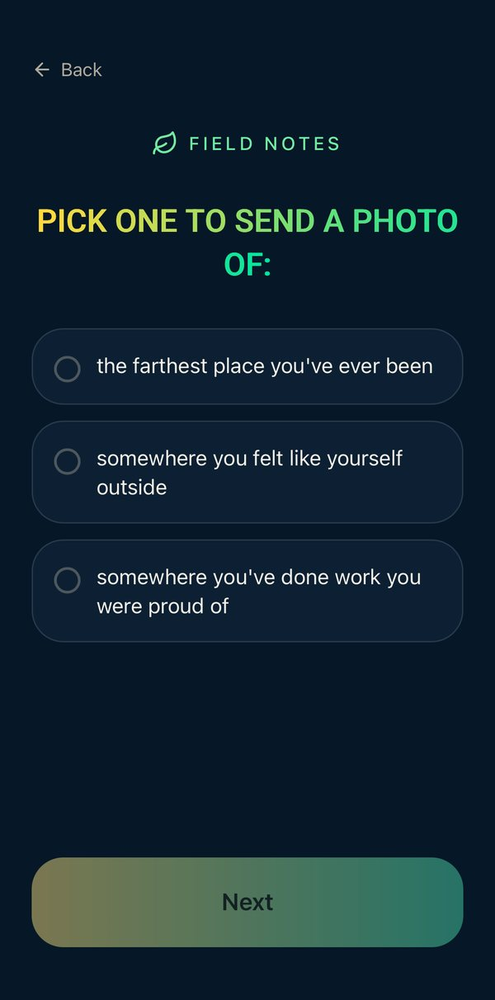
Field Notes
Live event app · NorCal Venture Conference
- Whisper transcription
- QR and SMS entry
- Live events
I developed Field Notes for the Northern California Venture Conference in Redding and ran it live there in May 2026. Attendees scanned a QR code, sent a photo from their personal lives, and recorded a voice note about it, with no sign-in required. Then I put our shared memory map up on screen, both to humanize an intimidating room and as a live demo of participatory tech for events and team bonding. Since the conference, I've received inquiries about licensing it as a product, including one for a consultancy's anniversary celebration.
- Audience
- A room of 100+ at the NorCal Venture Conference, who watched a live map of 15 attendees’ submissions during my pitch
What the model doesIt works live in the room. Whisper turns each voice note into text the moment it arrives, so every story lands on the map in real time. Lovable (built on Claude) wrote the app.
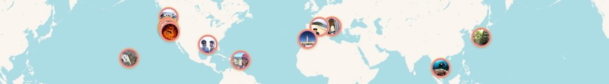
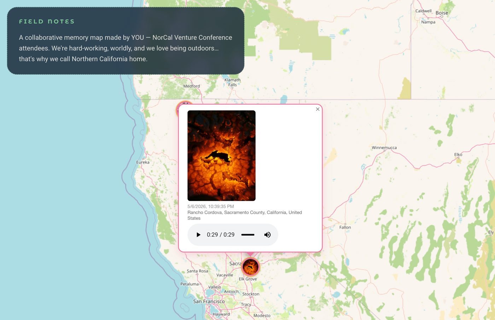
Field entry · Rancho Cordova, CA“I was at the test center, doing this experiment of burning one of the materials with a torch, and this is the pattern that was seen on the material while burning, and the way I felt was like a hunter in the middle of the winter, looking into the fire in the middle of the night.”
- Me
Came up with it for the NorCal Venture Conference
- AI
Built the app in Lovable (built on Claude)
- Me
Ran it live at the conference in May 2026
- Attendees
Sent in every photo and voice note
- Me
Coached people who got stuck on what to say; voice was still the easiest way in
- AI
OpenAI’s Whisper transcribed each voice note as it came in
- Me
Told the winner’s story in his own photo and voice, and showed the map during my pitch

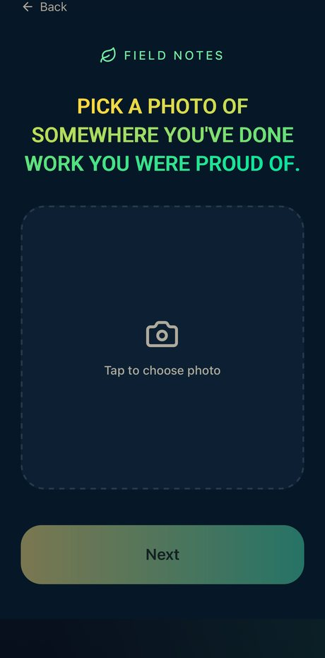
Choose a photo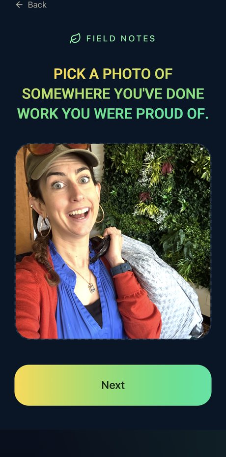
When you’re the CEO but also the janitor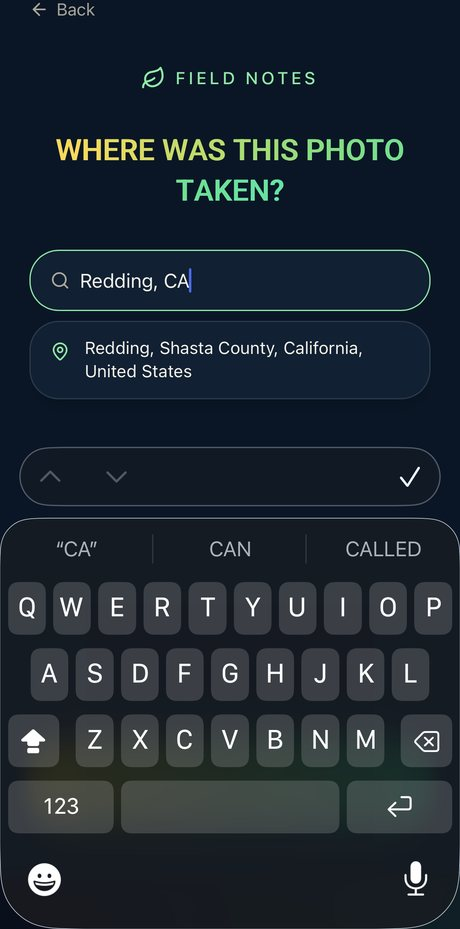
Where was it taken?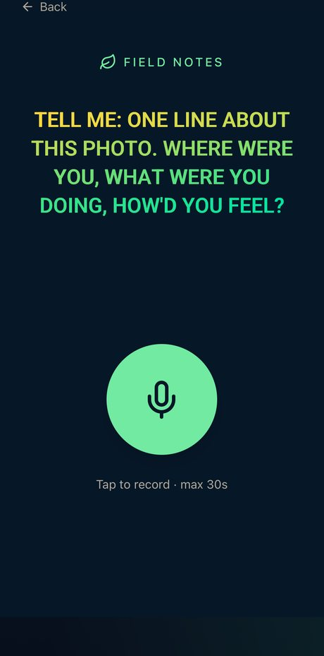
One line, out loud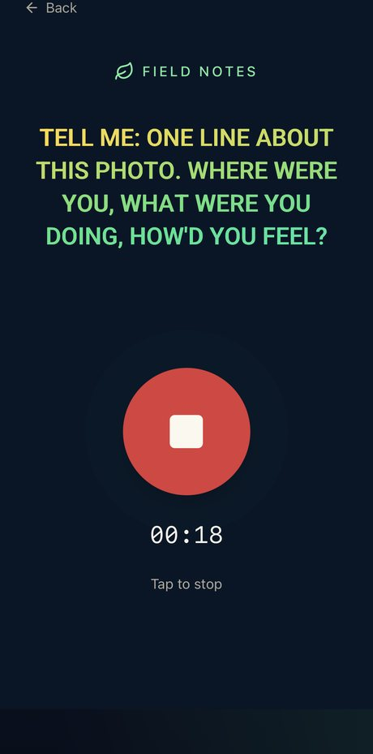
Recording (30 sec max)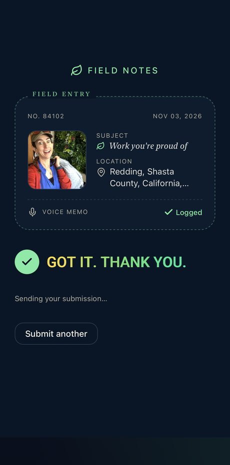
Logged as a field entry
The possibilities are honestly endless. Team bonding with prompts written for each group, but also stories that unfold as people interact with each other through their phones, the way Smartphone Orchestra's work does, set in real landscapes and paired with citizen science.
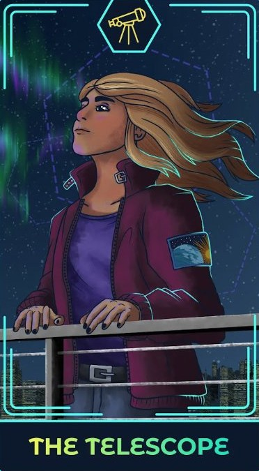
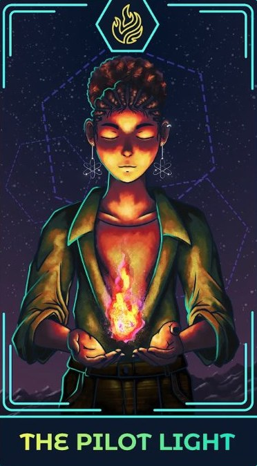
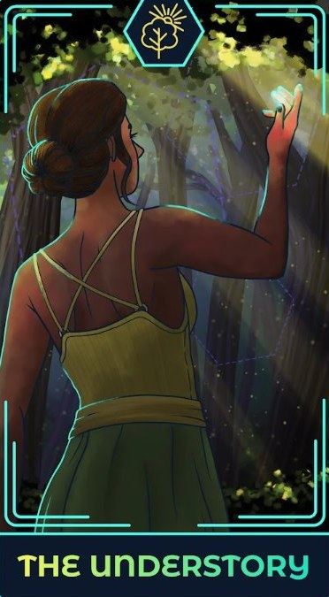
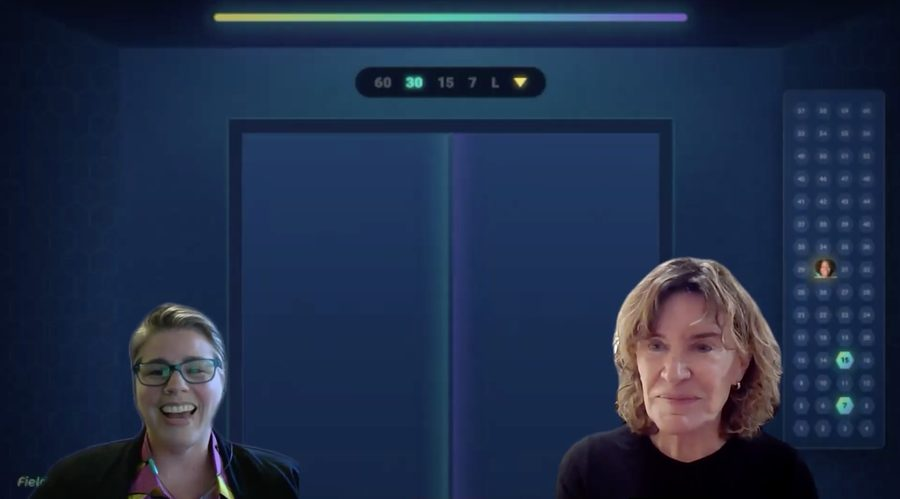

Visible Brilliance (The Elevator Drop)
Visibility program for women in STEM · quiz, challenge, and live games
- Game design
- Live facilitation
- Character design
Visible Brilliance is my studio's path for women in STEM who do brilliant work that few people see. It starts with a short video and a quiz that matches you to a hand-illustrated archetype, and more than 200 people have taken it. Its leads cost half what they did in our 2025 ad test. Next comes Recess, a 14-day challenge that mixes journal prompts with short social and communication exercises. It includes two AI tools: as a bonus, the LinkedIn audience tool I built for my strategy clients shows who your organization reaches now, and a counterweight version of AffirmMagic (see below) closes the challenge.
Field Season, the eight-week program, turns all of it into live creative games, one a week, each judged by a guest expert. I developed the games' mechanics and materials with AI. Two of them are shown here. In the first, each scientist builds her superhero: a card with a hero name, archetype, signature move, nemesis, and a battle cry she can say out loud. In the Elevator Drop, she pitches as that hero in an elevator we built in Zoom's Immersive View, riding with the judge, an angel investor who plays the person she most needs to win over. Every floor, her pitch has to shrink: 60 seconds, then 30, then 15, then 7. When the doors open on the lobby, the judge walks her through what landed, and she walks out with a seven-second version of her work.
- Audience
- 200+ quiz takers, then pilot cohorts of Recess and Field Season
What the model doesGame design partner for every game in the program.
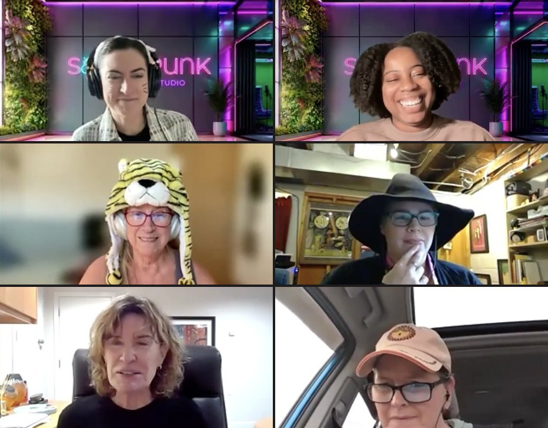
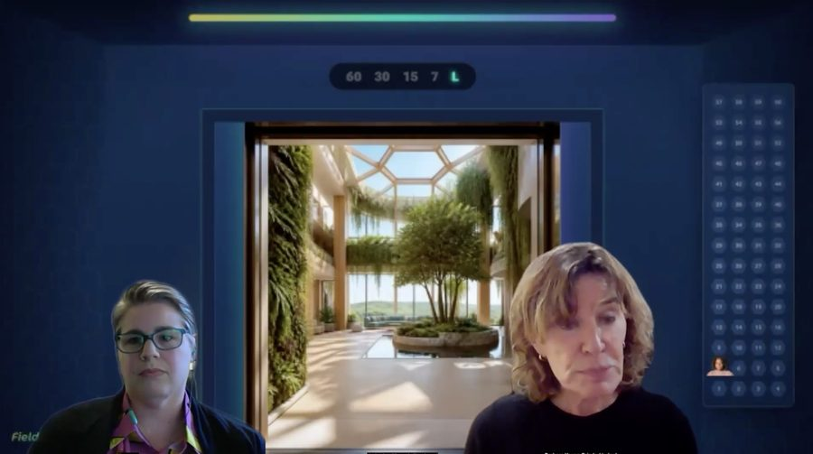
- Me
Designed the quiz, the Recess challenge, and the eight-week program with its eight games
- Illustrator
Hand-drew the quiz archetype cards
- MeAI
Added the LinkedIn audience tool I built for strategy clients (in Lovable, on Claude) to Recess as a bonus
- MeAI
Designed the superhero card players build on Field Day 1
- MeAI
Developed the Elevator Drop concept and its graphics, including the elevator floors
- Operations manager
Ran the elevator live: placing players, keeping time, and calling the floors
- Angel investor judge
Played the person each scientist most needs to win over, then judged each pitch
- Me
Hosted each game
“Words that survived”: Whisper transcribes every floor, and when the doors open, the screen highlights the phrases that made it from 60 seconds down to 7, so the judge's feedback starts from the player's own words. The live judge stays human, but a tool like Coach Clone could turn their feedback into a small agent players can practice with after the session ends.
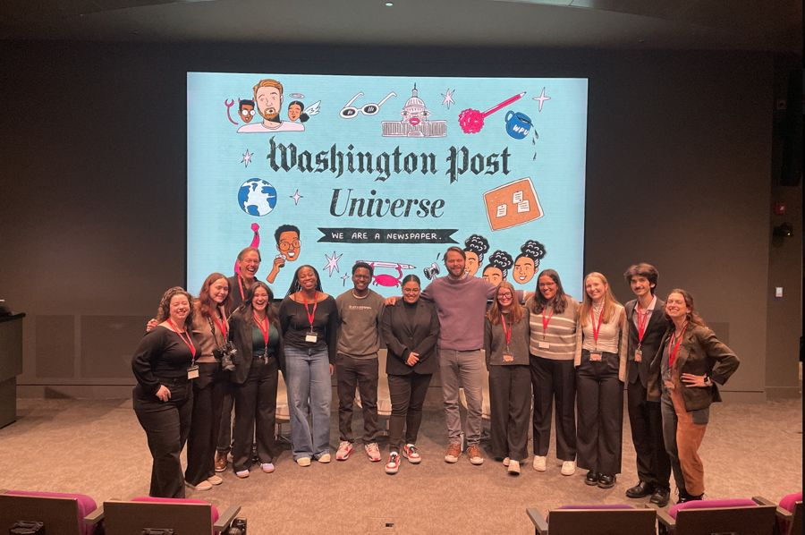
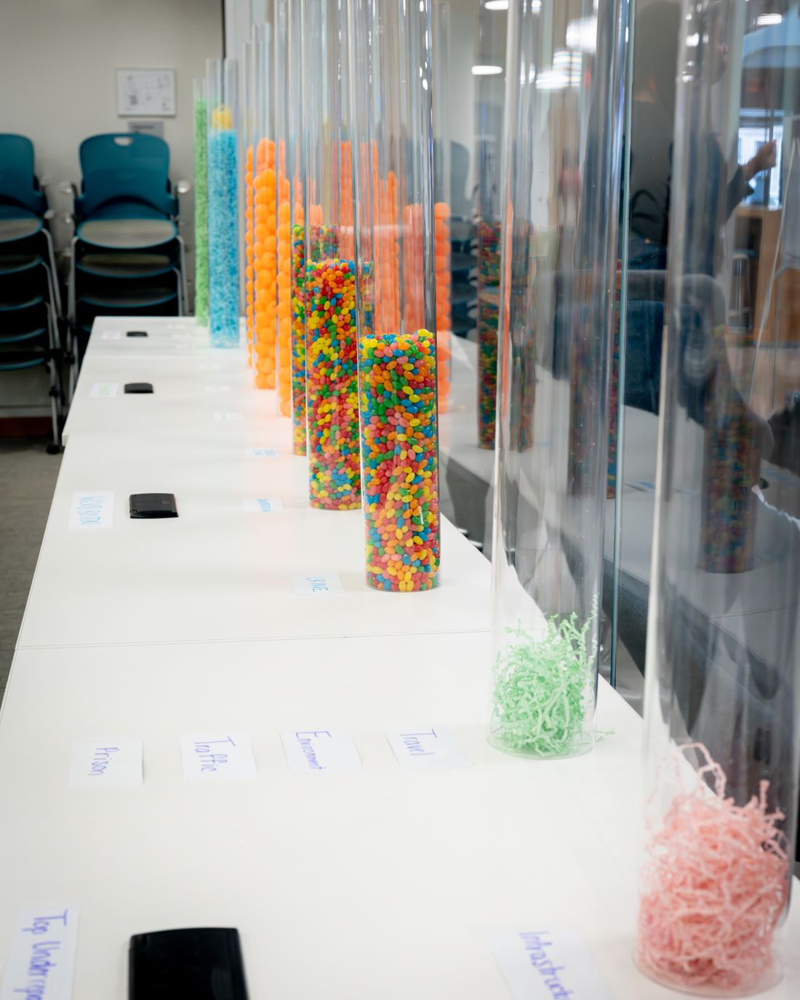
Reinvent 2025
Two-day summit · Data Playground installation
- Event production
- Physical data viz
- Installation
I produced Reinvent 2025, a two-day summit at Northeastern for Reinventing Local TV News, the Stanton Foundation-funded program I manage. It brought 3 keynotes, 14 panels, and 47 presenters, including Vox Media Editor-in-Chief Swati Sharma, PBS Digital Studios head Maribel Lopez, and The Washington Post's TikTok team, to nearly 500 attendees from GBH, The Boston Globe, NBCUniversal, and more, and came in under its $71K budget.
Data Playground
At the summit's center, I turned the program's research into a room people could walk through. Local news coverage became bar charts of clear tubes, one per category, filled with a mix of jelly beans, ping pong balls, and Easter grass. Fish bowls full of facts and tips sat around the room, and visitors added data of their own, from the topics they want more of in the news to their takeaways from the day.
- Audience
- Nearly 500 summit attendees, who walked the jelly bean chart and added their own data, from the news topics they want more of to their takeaways from the day
What the model doesChatGPT helped us measure what local TV news covers, topic by topic, and then sized the room-sized jelly bean chart built from those numbers.
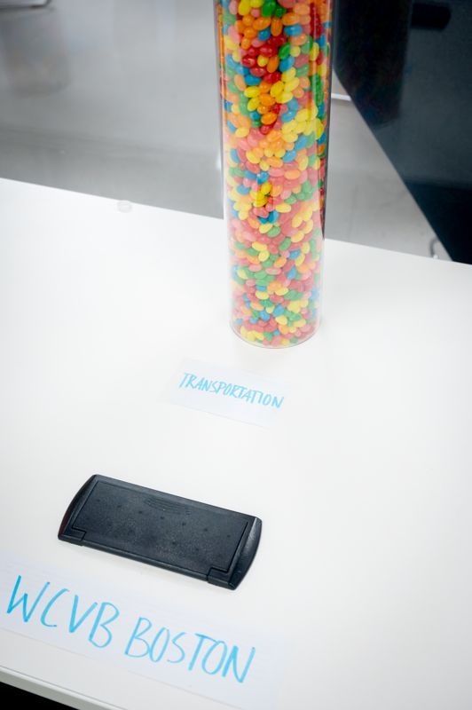
Transportation, WCVB Boston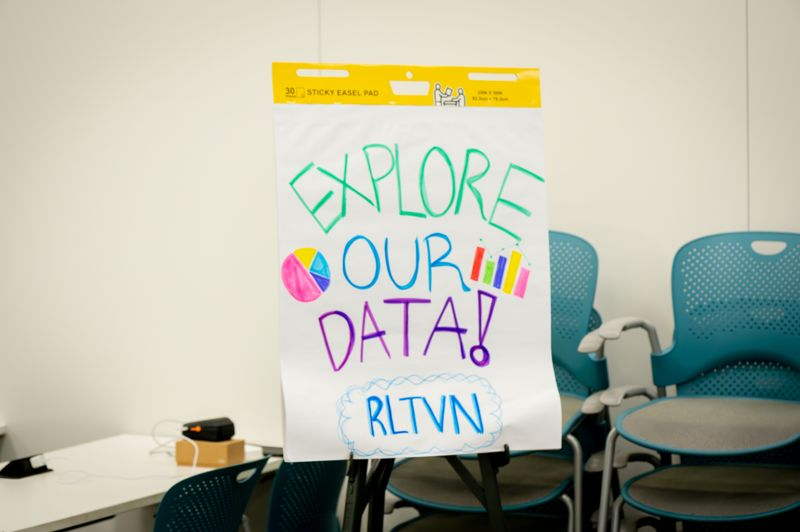
The invitation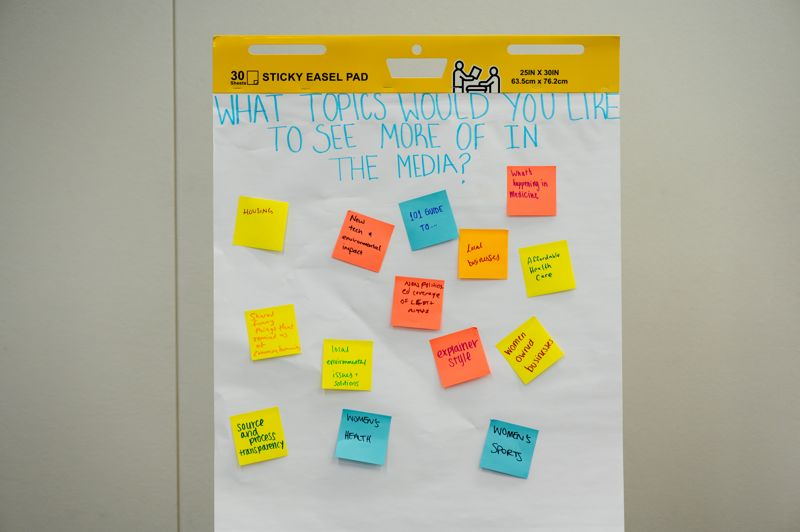
Visitors add their own data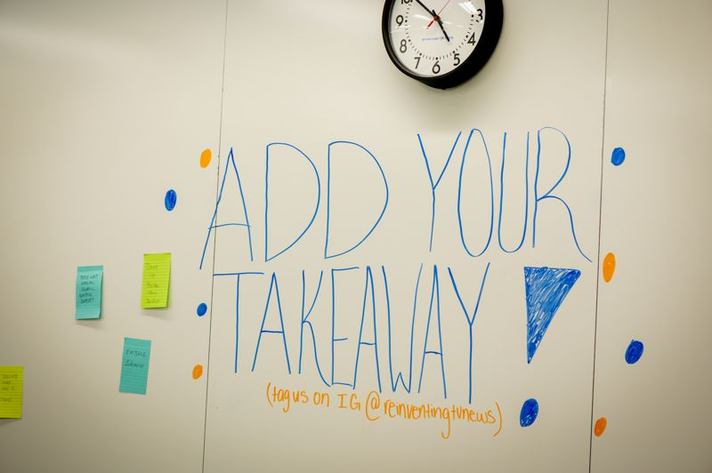
Takeaways on the wall
- Research teamAI
Wrote the code that scraped story counts from each station, with ChatGPT’s help
- Me
Designed a room people could walk through for the summit
- MeAI
Worked out how many jelly beans each tube needed and which tubing to buy (the counts held up; the tubing did not)
- MeResearch team
Built and set it up with markers, easels, and a lot of candy (somewhere along the way, a teammate accidentally subscribed us to regular shipments of jelly beans)
- Me
Hosted the room and evaluated it
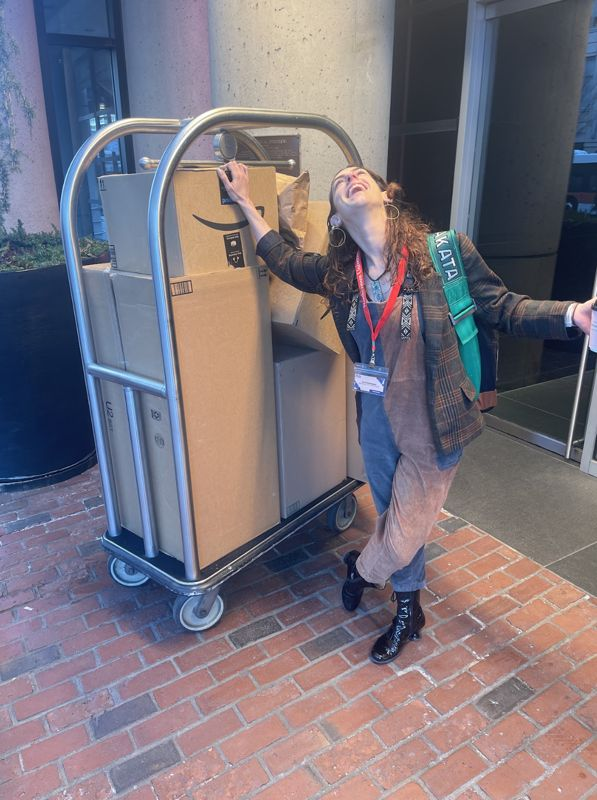
“BYO Algorithm”: Hook your phone up to the projector, scroll your social feed for 30 seconds, and get an instant readout of your own media diet, side by side with the “mainstream” diet in the jelly bean tubes, which shows what linear TV covers in major urban markets.
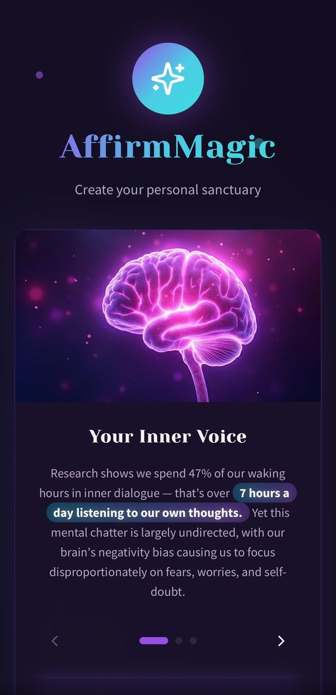
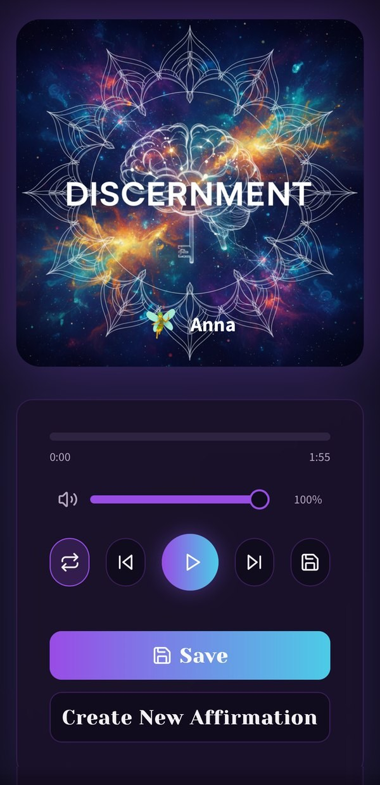
AffirmMagic
Voice AI app · in beta
- Voice cloning
- Audio design
- Mobile web app
This is an affirmations and meditation app where your own voice does the talking. You script affirmations with a guide, record or pick a voice, and layer it over ambient sound. Then you can play it back from a personal library, even with your phone locked.
Before any script reaches a voice, a moderator model screens it. Early versions were far too strict and flagged everyday slang, so I rewrote its rules to welcome phrases like “securing the bag,” big money goals, and competitive swagger, while still blocking hate, threats, and self-loathing. When it does catch something, it answers with “Aw, c’mon, don’t be like that.”
- Audience
- In beta with 23 testers, including participants in Recess, my studio's challenge for women in STEM
What the model doesIt is the voice. Gemini 2.5 Flash writes and screens your affirmation, ElevenLabs Multilingual v2 reads it aloud, and Gemini 2.5 Flash Image designs its cover.
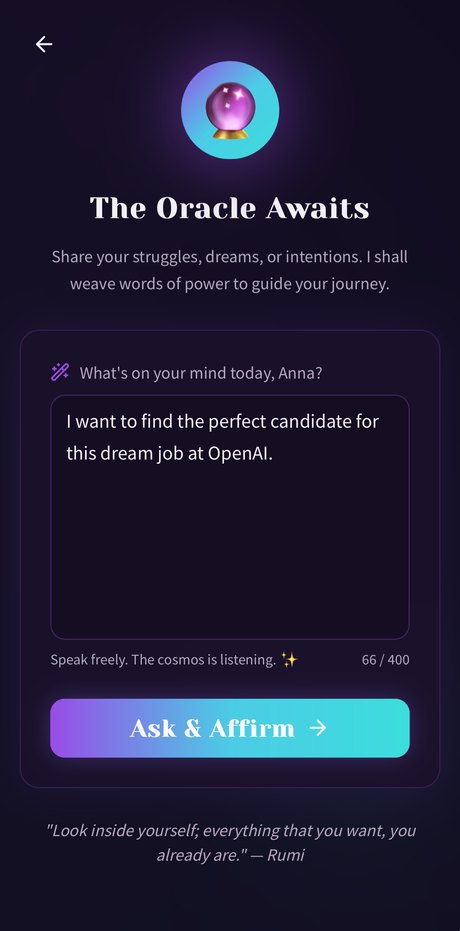
Say what is on your mind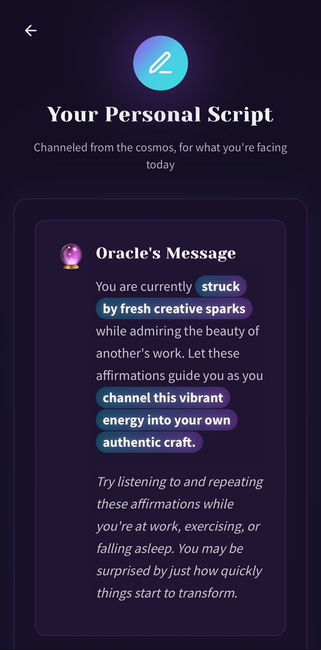
The Oracle reframes it- A personal affirmation script
 Pick a character voice
Pick a character voice
- Me
Came up with it from my own meditation practice
- MeAI
Wrote the affirmation scripts and auditioned every voice, keeping only the calm, natural ones
- ElevenLabs
Voice cloning, with models that pay real voice artists for their voices
- MeAI
Layered the audio and built the app, including a lock-screen player that took many rounds
- MeAI
Tuned the moderator’s safety rules until it let slang through and still caught real harm
- MeAI
Rebuilt it over a year of testing, including Counterweight, a version tuned for professionals
- MeTechnical systems engineer
Handed off my web app as the prototype for a sturdier rebuild, starting with audio playback and storage
A technical systems engineer is now rebuilding the app from my prototype so audio playback and storage hold up at scale. After that comes voice cloning, so you record a short sample once and a model speaks every new affirmation in your own voice. I'd also love to work with mental health experts on guided programs people can follow from start to finish.
Project Antibody
AR interactive magazine · An immune system you can hold
- Augmented reality
- Print design
- Science illustration
Aging, bacteria, gravity, solar storms, and in 2021, Covid-19. So much of what shapes our lives is too small, too big, or too abstract to see. For my master’s capstone in Northeastern’s Media Innovation program, I made a proof-of-concept science magazine that comes alive when you hold a phone over the pages. It shows how the immune system responds to Covid-19 and how vaccines help, and I wanted it to feel like something you’d pick up after a long day out of curiosity, not obligation.
Each spread pairs a page of plain text with an interactive image, so readers never juggle too much that’s new at once. Through the phone, the illustration turns into a kind of X-ray window, and buttons and toggles let readers set the pace, from immune cells pouring out of the bone marrow to a virus replicating inside a cell. I kept the tone fantastical, to leave people in awe of what’s happening inside their own bodies, and the vaccine pages neutral and respectful, with accurate, concise information so readers could decide for themselves.
- Audience
- 50 to 60 students and faculty at the Media Studio final presentations, which are open to all of CAMD, and the award jury
What the model doesNothing yet. I made Antibody in 2021, before frontier models, so the next step is where one comes in.
- Me
Came up with it in Northeastern’s Media Innovation Studio
- Me
Researched the science, wrote the copy, and designed the printed magazine
- Me
Built the AR layer in Unity and Vuforia, with Sketchfab 3D models cleaned up in Blender
- Professor and classmates
Gave feedback along the way
- Friends and family
Beta-tested it, which led to more legible text and more interactivity to guide readers
- Me
Presented it at the Media Studio finals
Point your phone at your own arm, not a picture of one, and get AR models and content built around your own body.
Sketchbook
Prototypes and experiments
Quick prototypes that each test a single idea, built with whatever the idea calls for, from AI and code to Arduino boards, VR, AR, 3D printers, laser cutters, and cardboard.
Neuron Pulse Sync
Audio visualizerAI
A neuron that fires to music. Pulses leave the cell body on the beat, and the melody travels out along the dendrites. It works with the mic or a demo track. I also mocked it up as a dancefloor, with scale figures standing on the iPad as the neuron fires under their feet.
Play ↗Kelp Forest Food Web
Data interactiveAI
A 3D web of who eats whom in the Santa Barbara Channel kelp forest: 282 species and 1,383 interactions. Spin the whole web, or follow a story through the characters that hold it together, from giant kelp to sea otters. AI built it from the research data, art included, and I swapped in real photos wherever it got a species wrong.
Data: the kelpforest database at UC Santa Cruz (Beas-Luna et al., 2014, PLoS ONE)
Explore ↗Dollar Divided
Data storyAI
A scroll-driven story about how much of an electric bill goes to utility investors, made as a capabilities demo for an Energy Policy Institute RFP. AI crunched the utility financials with me, and Lovable (built on Claude) coded a stop-motion that tears apart my photos of a real crumpled dollar.
Scroll the story ↗FireplaceFlow
Algorithmic musicAI
An arrangement engine for ambient tracks that can run for any length. Each clip is tagged by role and behavior, and the engine weaves layers in and out over long stretches, mixing my own loops with ones from invited musicians, stock libraries, and AI. Built with Lovable (on Claude) and REAPER.
Ambient Scenes
Generative videoAI
Cozy looping scenes for long ambient videos, like a fire flickering in an open barn at dusk. I generated the stills with GPT-4o image generation in ChatGPT and brought them to life in After Effects, as the visual side of FireplaceFlow.
Flying Oranges
Data visualizationAI
California's agricultural trade on a spinning 3D globe, with arcs flying between the state and its trading partners. Built from USDA Economic Research Service data.
The Astrology of Hydrology
Data story
A playful “hydroscope” that reads your birth watershed instead of your stars. Enter where and when you were born, and it finds your USGS hydrologic unit, the Indigenous nations whose land it is, its major rivers, and a streamgraph of river flow across the country in the month you were born. We made it in 2020, before generative AI. I wrote the story, and a USGS engineer wrote the code.
Explore ↗Studio Toolkit
Internal toolsAI
Small tools I built in Lovable (on Claude) to run Solarpunk Studio include a cash flow tracker with 12-month projections, an animated 3D device mockup studio, a color contrast checker, a font and palette explorer, a LinkedIn analytics dashboard, and a funnel builder for book launches. Alongside them run copywriter assistants that hold each client's brand rules, and an opportunity scanner that found this opportunity.
Banana Piano
Arduino
Six bananas and two tomatoes wired to an Arduino as touch keys. Tap one and it plays a note.
Hospital of the Future
VR
A walk through a hospital set under giant glowing mushrooms, from the lab to the patient beds. An exercise in virtual experience prototyping.
Long-Distance Coffee
Arduino
Two connected coffee cups for friends or family far apart. A DHT11 temperature and humidity sensor in each cup notices when it's filled with hot coffee, and the other cup lights up as an invitation to join you.
Stepping Out
Data story
A data story about time outdoors in 2019 and 2020, made with a team of four on a pair of elevator doors. My part was the birds, which I built by counting and sorting iNaturalist submissions and scaling each vector bird to match. I wish AI had been around to help with that.
AR Mural Hunt
AR scavenger hunt
A scavenger hunt through a set of murals, all about birds. At each stop, an AR scene adds a title, a 3D model or image, and a link to dig deeper, from paper crane mythology to the dinosaurs birds evolved from. The Stepping Out elevator became the Bird-a-vator stop.
Museum Flow
Visitor flow model
A plywood floor plan for working out how different types of museum visitors move through an exhibit. Each wire traces one visitor's path from entry to exit, so the layout can make every path a good one.
Process Studies
Arduino, laser cutting, and 3D printing
One-off exercises in specific prototyping processes. A cardboard octopus aquarium lights up when it senses motion, a hardboard planter fits together with laser-cut finger joints, and a 3D-printed strap buckle tested whether additive manufacturing could work for Dirtbag, a product concept.